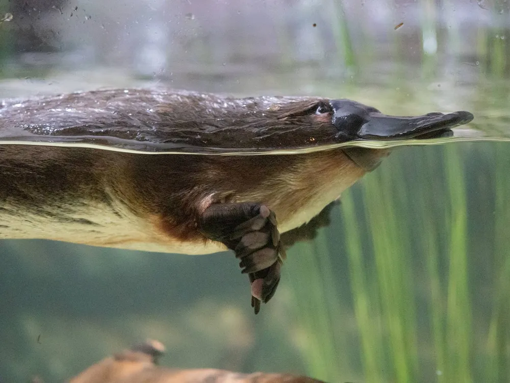

Sobre ornitorrincos
O ornitorrinco é um animal bem interesante, já que ele é um mamífero que bota ovo
Além disso, ele tem membrana nas patas que os ajuda a nadar e ferrões ligados a uma glândula de veneno
Eles podem viver cerca de 20 anos, são carnívoros de hábito noturno
Medem cerca de 51 cm com a calda e são animais que vivem na água.
